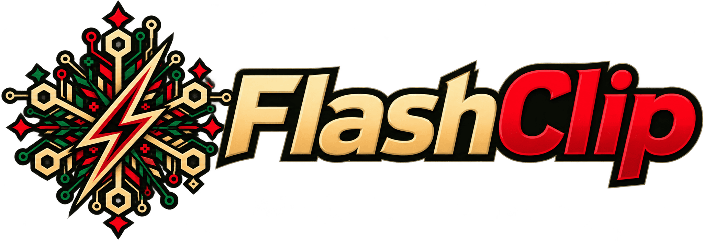

Edição de Natal · 2026
Um Natal.
Três ideias.
Escolha como entrar no pequeno mundo do FlashClip. As três propostas incluem o globo interativo, a abertura e os sons de Natal.
01
Sem a foto
Verde profundo, luz dourada, o globo em destaque e notebooks 3D nos cursos.
Explorar esta versão02
Com a foto
Uma paisagem de inverno para receber o globo, com notebooks 3D nos cursos.
Explorar esta versão03
Escura do Pedro
A paleta preta e dourada do Pedro, a cabana no topo da página e notebooks 3D nos cursos.
Explorar esta versão